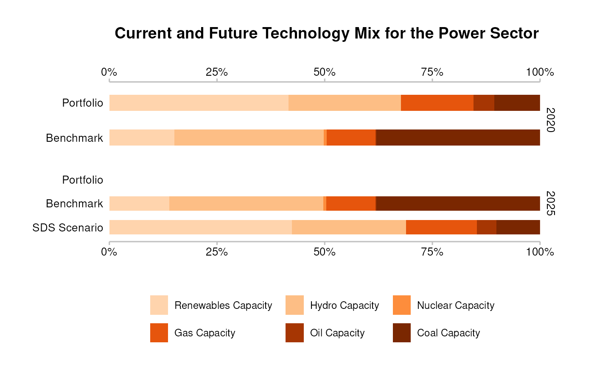
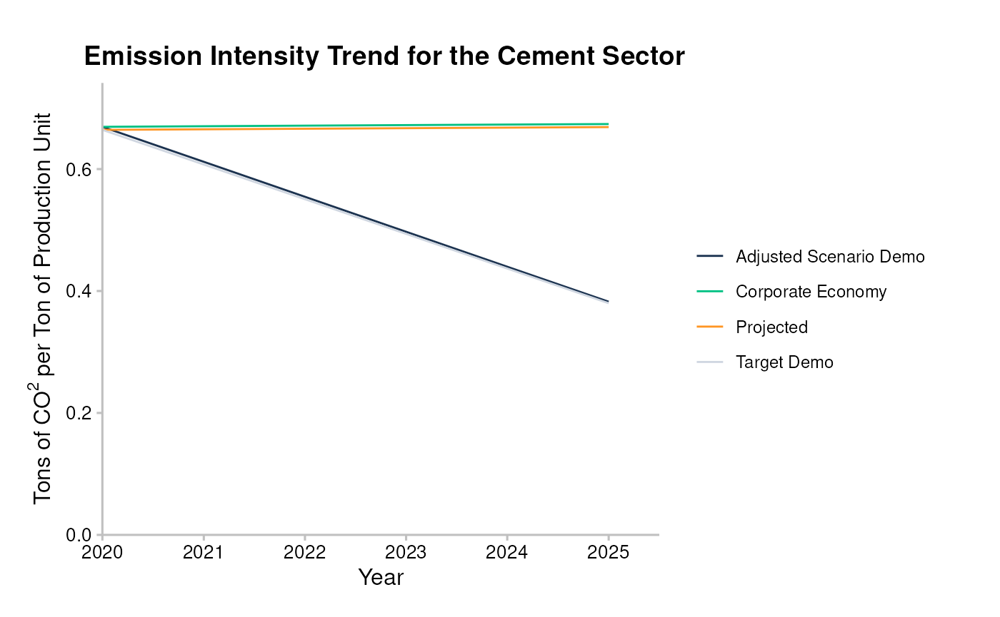
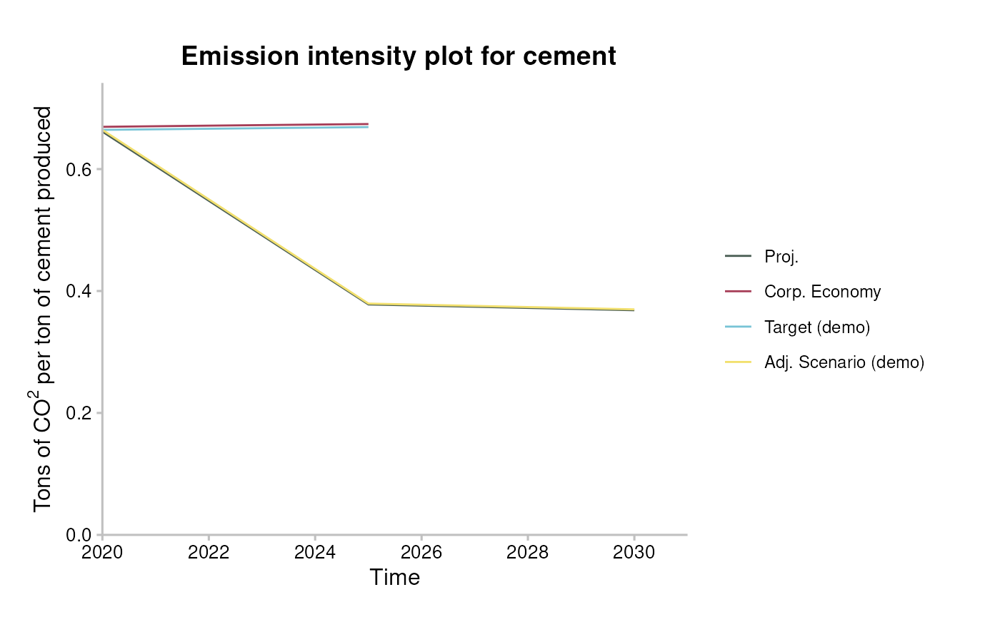
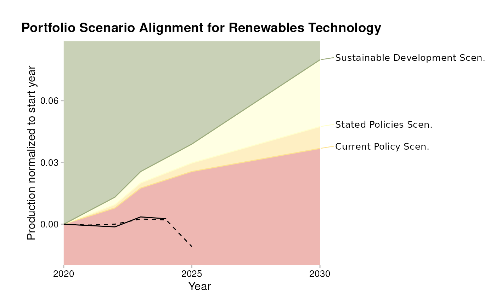

The goal of r2dii.plot is to help you plot 2DII data in an informative, beautiful, and easy way. It is designed to work smoothly with other “r2dii” packages – r2dii.data, r2dii.match, and r2dii.analysis. It also plays well with the ggplot2 package, which helps you customize your plots.
library(ggplot2)
library(dplyr, warn.conflicts = FALSE)
library(r2dii.data)
library(r2dii.match)
library(r2dii.analysis)
library(r2dii.plot)
#>
#> Attaching package: 'r2dii.plot'
#> The following object is masked from 'package:r2dii.data':
#>
#> data_dictionaryYour data should have a structure similar to that of the demo datasets in the r2dii.data package.
loanbook <- loanbook_demo
abcd <- abcd_demo
scenario <- co2_intensity_scenario_demo
region <- region_isos_demoYour workflow involves functions from the packages r2dii.match and r2dii.analysis.
matched <- loanbook %>%
match_name(abcd) %>%
prioritize() # Remember to validate matches (see `?prioritize`)r2dii.plot supports three kinds of plots:
- Emission intensity,
- Techmix,
- Volume trajectory.
Each plot can be created using two types of functions:
-
qplot_*()for standardized plots, -
plot_*()for ‘bare’ plots leaving the customization to the user. These require that you first prepare the data using aprep_*()function.
For each kind, you’ll need to subset the specific rows you want to
plot (for example with subset() or
dplyr:filter()). For details see the documented
“Requirements” of the argument data of each
prep_*() or qplot_*() function (e.g. see
?prep_emission_intensity). If you forget to meet the
data requirements the error message should guide you.
‘Quick’ plots
Quick plots allow you to create a good looking plot without extensive knowledge of other R packages. They are perfect to have a quick look into the data and for users who are interested in standard PACTA visualizations. Their common characteristics are:
- 5 year time span.
- Formatted data labels.
- Formatted axis labels and scales.
- A title (and a subtitle).
Use qplot_emission_intensity() with
sda-like data.
data <- matched %>%
target_sda(abcd, co2_intensity_scenario = scenario, region_isos = region) %>%
filter(
sector == "cement",
region == "global",
scenario_source == "demo_2020"
)
#> Warning: Removing rows in abcd where `emission_factor` is NA
qplot_emission_intensity(data)
Use qplot_trajectory() with
market_share-like data.
data <- matched %>%
target_market_share(abcd, scenario = scenario_demo_2020, region_isos = region) %>%
filter(
technology == "renewablescap",
region == "global",
scenario_source == "demo_2020"
)
qplot_trajectory(data)
Use qplot_techmix() with market_share-like
data.
data <- matched %>%
target_market_share(abcd, scenario = scenario_demo_2020, region_isos = region) %>%
filter(
sector == "power",
region == "global",
scenario_source == "demo_2020",
metric %in% c("projected", "corporate_economy", "target_sds")
)
qplot_techmix(data)
#> The `technology_share` values are plotted for extreme years.
#> Do you want to plot different years? E.g. filter . with:`subset(., year %in% c(2020, 2030))`.
#> Warning: Removed 3 rows containing missing values or values outside the scale range
#> (`geom_bar()`).
Plots
Plots created with plot_*() functions show the data as
they are. To customize these plots you can use three strategies:
- Use parameters of
plot_*()functions, - Modify the input
data, - Use
ggplot2functions.
The following sub sections show the three strategies applied to
different functions of the plot_*() family.
Plot customization strategies 1 and 3: parameters and ggplot2 functions
We will show how you might customize a plot using strategy 1 and 3
based on plot_emission_intensity().
The basic output of the function looks rather unappealing.
data <- matched %>%
target_sda(abcd, co2_intensity_scenario = scenario, region_isos = region) %>%
filter(
sector == "cement",
region == "global",
scenario_source == "demo_2020"
)
#> Warning: Removing rows in abcd where `emission_factor` is NA
data <- prep_emission_intensity(data)
plot_emission_intensity(data)
You can use parameters of prep_emission_intensity and
plot_emission_intensity() to replicate features of
qplot_emission_intensity() (strategy 1), and add plot
labels with ggplot2::labs() (strategy 3).
data <- matched %>%
target_sda(abcd, co2_intensity_scenario = scenario, region_isos = region) %>%
filter(
sector == "cement",
region == "global",
scenario_source == "demo_2020"
)
#> Warning: Removing rows in abcd where `emission_factor` is NA
data <- prep_emission_intensity(data, convert_label = to_title, span_5yr = TRUE)
plot_emission_intensity(data) +
labs(
title = "Emission Intensity Trend for the Cement Sector",
x = "Year",
y = "Tons of CO2 per Ton of Production Unit"
)
Plot customization strategies 2 and 3: input data and ggplot2 functions
You can also polish your plot by modifying the input
data (strategy 2), for example:
- Changing the time span.
- Adding custom labels by adding a column ‘label’ or ‘label_tech’ to
market_share-like data.
And by modifying output ggplot object (strategy 3), for
example:
- Adding a title and a subtitle using
ggplot2::labs(). - Changing x and y axis labels using
ggplot2::labs(). - Customizing the colours and legend labels with
ggplot2::scale_colour_manual()orr2dii.plot::scale_*()functions (see Styling functions).
Here is how you might customize each of the three kinds of plots using strategy 2 and 3:
-
plot_emission_intensity()- add custom title and axis labels and modify colours and legend labels.
data <- sda %>%
filter(
sector == "cement",
region == "global",
scenario_source == "demo_2020",
year <= 2030
)
data <- prep_emission_intensity(data)
plot_emission_intensity(data) +
labs(
title = "Emission intensity plot for cement",
x = "Time",
y = "Tons of CO2 per ton of cement produced"
) +
scale_color_manual(
values = c("#4a5e54", "#a63d57", "#78c4d6", "#f2e06e"),
labels = c("Proj.", "Corp. Economy", "Target (demo)", "Adj. Scenario (demo)")
)
#> Scale for colour is already present.
#> Adding another scale for colour, which will replace the existing scale.
-
plot_trajectory()- change time span, add ‘label’ column and add custom title and axis labels.
data <- matched %>%
target_market_share(abcd, scenario = scenario_demo_2020, region_isos = region) %>%
filter(
technology == "renewablescap",
region == "global",
scenario_source == "demo_2020",
year <= 2030
) %>%
mutate(
label = case_when(
metric == "projected" ~ "Your Portfolio",
metric == "corporate_economy" ~ "Benchmark (Corp. Economy)",
metric == "target_sds" ~ "Sustainable Development Scen.",
metric == "target_sps" ~ "Stated Policies Scen.",
metric == "target_cps" ~ "Current Policy Scen.",
TRUE ~ metric
)
)
data <- prep_trajectory(data)
plot_trajectory(data) +
scale_x_continuous(n.breaks = 3) +
labs(
title = "Portfolio Scenario Alignment for Renewables Technology",
x = "Year",
y = "Production normalized to start year"
) +
theme(plot.margin = unit(c(0.5, 6, 0.5, 1), "cm")) # so the long labels fit
#> Scale for x is already present.
#> Adding another scale for x, which will replace the existing scale.
-
plot_techmix()- change time span, add ‘label’ column, apply custom colours and modify legend labels.
data <- market_share %>%
filter(
metric %in% c("projected", "corporate_economy", "target_sds"),
sector == "power",
scenario_source == "demo_2020",
region == "global",
year >= 2021,
year <= 2040 # custom time range
) %>%
mutate(
label = case_when(
metric == "projected" ~ "Your Portfolio",
metric == "corporate_economy" ~ "Corporate Economy Benchmark",
metric == "target_sds" ~ "SDS Scenario"
)
)
data <- prep_techmix(data)
#> The `technology_share` values are plotted for extreme years.
#> Do you want to plot different years? E.g. filter data with:`subset(data, year %in% c(2020, 2030))`.
plot_techmix(data) +
scale_fill_manual(
values = c("black", "brown", "grey", "yellow", "blue", "green4"),
labels = paste(c("Coal", "Oil", "Gas", "Nuclear", "Hydro", "Renewables"), "Cap.")
)
#> Scale for fill is already present.
#> Adding another scale for fill, which will replace the existing scale.
-
plot_techmix()- remove scenario data for start year.
data <- market_share %>%
filter(
metric %in% c("projected", "corporate_economy", "target_sds"),
sector == "power",
region == "global",
scenario_source == "demo_2020"
) %>%
filter(
!((metric == "target_sds") & (year == 2020))
)
data <- prep_techmix(data)
#> The `technology_share` values are plotted for extreme years.
#> Do you want to plot different years? E.g. filter data with:`subset(data, year %in% c(2020, 2030))`.
plot_techmix(data)Styling functions
A number of functions allow you to customize any of your plots using the 2DII style:
- Use
theme_2dii()to change the display of non-data content.
data <- market_share %>%
filter(
metric == "projected",
sector == "power",
region == "global",
year %in% c(2020, 2025)
)
ggplot(data, aes(x = factor(year), y = production)) +
geom_col() +
facet_wrap(~technology) +
theme_2dii()
- Use
scale_colour_r2dii()andscale_fill_r2dii()to apply the 2DII colour palette (see?scale_colour_2dii()to find out what are the available colour labels).
data <- market_share %>%
filter(
metric != "corporate_economy",
sector == "power",
region == "global",
technology == "renewablescap"
)
ggplot(data, aes(x = year, y = production, color = metric)) +
geom_line() +
scale_colour_r2dii(labels = c("dark_blue", "green", "orange", "ruby_red")) +
theme_2dii()
- Use
scale_colour_r2dii_sector()andscale_fill_r2dii_sector()to apply the 2DII colour palette for sectors (see?scale_colour_2dii_sector()to find out what are the available colour labels).
data <- market_share %>%
filter(
metric == "projected",
region == "global",
year %in% c(2020, 2025)
) %>%
group_by(sector, year) %>%
summarise(production = sum(production))
#> `summarise()` has grouped output by 'sector'. You can override using the
#> `.groups` argument.
ggplot(data, aes(x = factor(year), y = production, fill = sector)) +
geom_col() +
scale_fill_r2dii_sector(sectors = c("automotive", "oil&gas", "power")) +
theme_2dii() +
facet_wrap(~sector)- Use
scale_colour_r2dii_tech()andscale_fill_r2dii_tech()to apply the 2DII colour palette for technologies (see?scale_colour_2dii_tech()to find out what are the available colour labels).
technologies <- c("coalcap", "oilcap", "gascap", "nuclearcap", "hydrocap", "renewablescap")
data <- market_share %>%
filter(
metric == "projected",
sector == "power",
region == "global",
year %in% c(2020, 2025)
) %>%
mutate(technology = factor(technology, levels = technologies)) %>%
arrange(technology)
ggplot(data, aes(x = factor(year), y = production, fill = technology)) +
geom_col() +
scale_fill_r2dii_tech("power", technologies) +
facet_wrap(~technology) +
theme_2dii()
Funding
This project has received funding from the European Union LIFE program and the International Climate Initiative (IKI). The Federal Ministry for the Environment, Nature Conservation and Nuclear Safety (BMU) supports this initiative on the basis of a decision adopted by the German Bundestag. The views expressed are the sole responsibility of the authors and do not necessarily reflect the views of the funders. The funders are not responsible for any use that may be made of the information it contains.